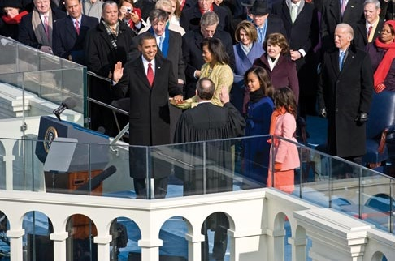

Why It Still Matters
The Emancipation Proclamation still matters because it marked a turning point in American history. It showed that the government could take action to support freedom, even in the middle of a war.
Although it didn't end slavery on its own, it shifted how the country thought about justice and equality. It showed that progress is possible, and one bold action can lead to lasting change.
Constitutional and Legal Legacy
The Proclamation paved the way for the 13th, 14th, and 15th Amendments, which reconstructed the Constitution. These amendments established the principle that the federal government has not just the power but the responsibility to protect individual rights against state interference.
This constitutional framework later became the foundation of the Civil Rights Movement in the 1950s and 1960s. It provided legal tools and opportunities to challenge discrimination.
Impact on Later Civil Rights Movements
It inspired later civil rights movements. Even Martin Luther King Jr. talked about it. In his famous "I Have a Dream" speech, delivered on the steps of the Lincoln Memorial in 1963, King began by referring to the Emancipation Proclamation as an unfulfilled promise.
Civil rights leaders used the Proclamation as both inspiration and a reminder that the work of freedom was incomplete. They argued that true emancipation required not just freedom but also economic, political, and social equality.
"Five score years ago, a great American, in whose symbolic shadow we stand today, signed the Emancipation Proclamation. This momentous decree came as a great beacon light of hope to millions of Negro slaves who had been seared in the flames of withering injustice."
— Martin Luther King Jr., "I Have a Dream" speech, August 28, 1963
Global Influence
The Emancipation Proclamation influenced freedom movements around the world. It demonstrated that even systems of oppression could be challenged and changed through political action and moral leadership.
The document became a symbol of hope for the oppressed globally, showing that governments could choose justice over economic and political interests.
Modern Relevance
Today, the Proclamation reminds us that the fight for equality is ongoing. While slavery legally ended, the struggle for true equality continues in areas such as criminal reform, economic opportunity, and educational access.
The document teaches us that meaningful change often requires bold leadership, even when the immediate results are limited. Lincoln's willingness to act, despite political risks and uncertainties, provides a model for modern leaders facing difficult moral choices.
The Emancipation Proclamation also reminds us that progress is often incremental. While the Proclamation didn't solve the problem of slavery immediately, it set forces in motion that eventually led to full emancipation and increased civil rights.

Barack Obama is sworn in as president using Lincoln’s Bible, symbolizing how the promise of equality from over a century ago still resonates today. Source: Library of Congress.
Enduring Message: The Emancipation Proclamation teaches us that history bends toward justice, but only when people are willing to take action, even when the path forward is uncertain and the immediate results are limited.